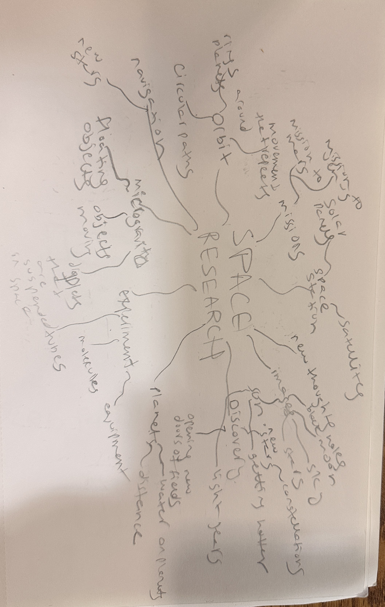
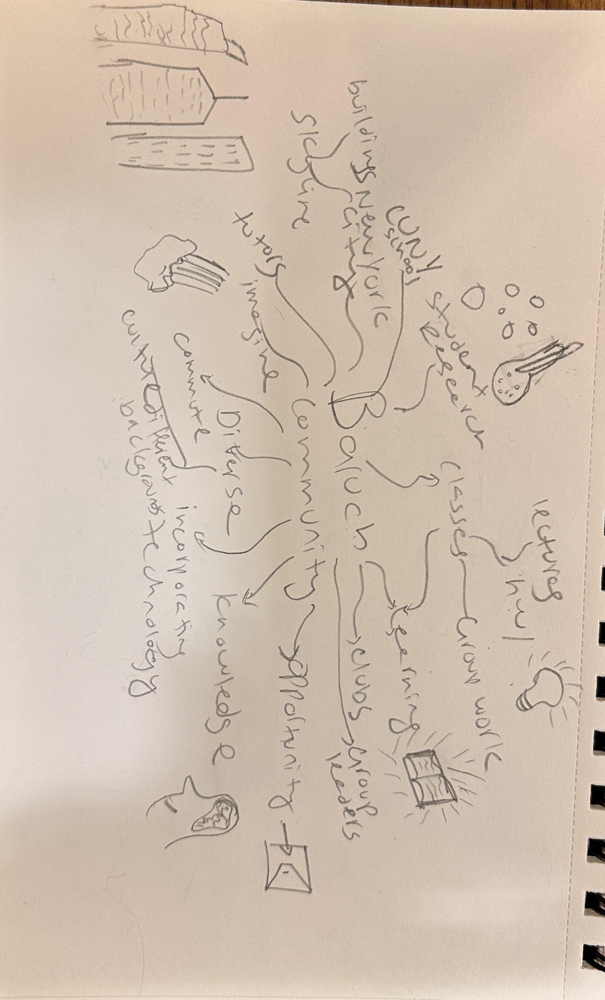
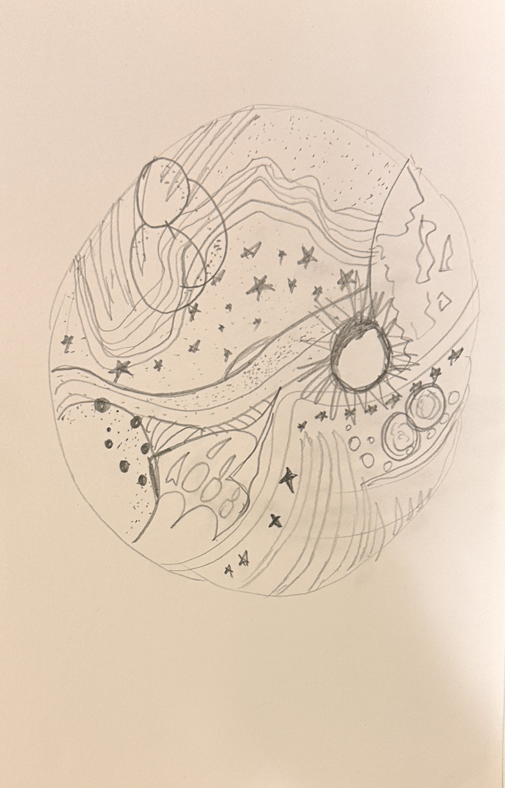
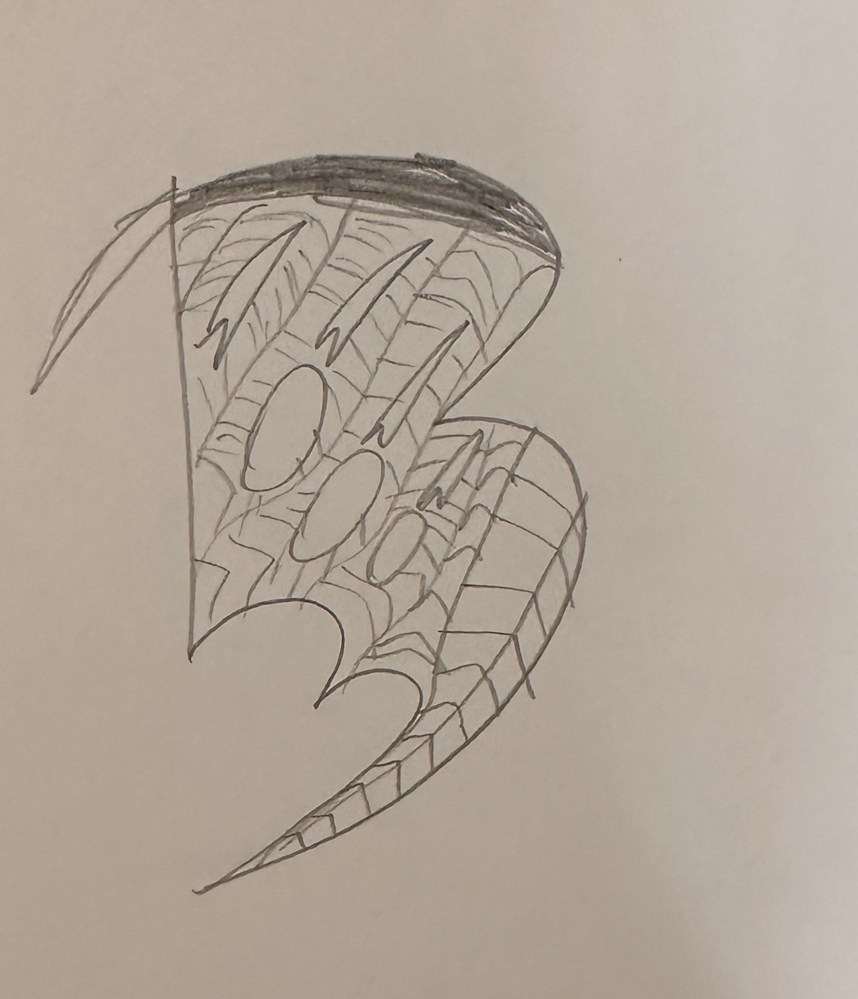

1. Space Research
IMG_4296

Brainstorming map exploring microgravity, orbital paths, planetary distance, test tubes, suspended liquids, and space station experiments.
Baruch College • Student Spaceflight Experiments Program

Brainstorming map exploring microgravity, orbital paths, planetary distance, test tubes, suspended liquids, and space station experiments.

Brainstorming map connecting student laboratory research, CUNY identity, NYC skyline landmarks, community diversity, and collaborative academic learning.

The concept selected was Abstraction.

The circular patch representing the abstract concept: organic cosmic topography, planetary rings, stellar currents, and a radiating sun designed to hold the logo inside.

Stylized Baruch "B" monogram insignia featuring aerodynamic paneling and research sample chambers, designed to be positioned inside the patch.